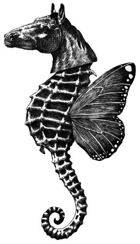

IMAGINAIRE
"La réalité n'est jamais telle que vous la voyez : la vérité est avant tout l'imagination." René MAGRITTE
Le sens commun associe l'imaginaire au mot imagination. Il s'agit de la capacité à se représenter le monde à l'aide d'un réseau d'association d'images qui lui donnent un sens. C'est donc une relation intérieure à des images portées sur l'extérieur. L'imaginaire témoigne de la subjectivité de la personne. Les images imaginaires traversent l'esprit et sont présentes avant même que l'on tente de les inscrire dans la normativité symbolique du langage. Elles correspondent à la singularité du sujet. L’imagination peut être la faculté de la psyché, dans la dimension du conscient à partir de ce qu’elle connaît, à se représenter des images, des sensations ou des situations qu'elle a déjà perçues et qu'elle se remémore. A l’aide de ces images connues la personne peut projeter, par la pensée, une situation future ou, inversement, se souvenir du passé.
L'imaginaire serait, pour ce qui nous concerne, le fruit de l'inconscient, donc de la non conscience. C'est la faculté de former des images qu'on ne connaît pas ou de créer des images en combinant les idées. Il s'agit ici de créer ou d'inventer des images, des situations, des sensations et de pouvoir permettre l’actualisation d’un potentiel accessible à l’éveil. Cette faculté de créer, d’imaginer quelque chose permet l’accès au monde du réel, non-rationnel, immatériel et ouvrant à la transcendance, c’est-à-dire à l’esprit. Il s’agit là d’une imagination créatrice produite par l'ouverture de la psyché aux grands mythes, symboles, archétypes et d’une recherche de sens de l’existence.
Ainsi la conscience dispose de deux manières pour se représenter le monde. L'une correspond à la représentation exacte d'une réalité connue, l'autre symbolise la perception intérieure de quelque chose d'impossible à voir, qui n'a aucune réalité matérielle et qui peut sembler être une illusion, le réel par l'imaginaire.
Les concepts d'imaginaire et d’imagination renvoient donc aux concepts de réalité et de réel. Qu'est-ce que la réalité ? Qu'est-ce que le réel ? La réalité peut-être définie comme le monde des significations construites par la pensée et par l'intermédiaire du langage qui nous permet de percevoir le monde extérieur. Le monde de la réalité est un monde signifiant et limité. Dans ce monde, c'est-à-dire le monde culturel et social dans lequel nous vivons, nous évoluons par accumulation du savoir et analyse rationnelle des phénomènes. C'est un monde conceptuel permettant à l’homme de donner du sens pour son existence mais au sein duquel il ne parvient parfois plus à percevoir ce qu’il y a au-delà de cette réalité construite et qui finalement, est illusoire.
Le réel est ce qui se découvre et dont on fait l’expérience lorsque l'on s'éloigne des codages sociologiques, psychologiques et de toutes réalités établies. C'est ce moment où l'on entre dans un silence intérieur où il n'y a plus ni concepts, ni injonctions. On accède alors à une connaissance directe "du monde".
L'imaginaire serait, pour ce qui nous concerne, le fruit de l'inconscient, donc de la non conscience. C'est la faculté de former des images qu'on ne connaît pas ou de créer des images en combinant les idées. Il s'agit ici de créer ou d'inventer des images, des situations, des sensations et de pouvoir permettre l’actualisation d’un potentiel accessible à l’éveil. Cette faculté de créer, d’imaginer quelque chose permet l’accès au monde du réel, non-rationnel, immatériel et ouvrant à la transcendance, c’est-à-dire à l’esprit. Il s’agit là d’une imagination créatrice produite par l'ouverture de la psyché aux grands mythes, symboles, archétypes et d’une recherche de sens de l’existence.
Ainsi la conscience dispose de deux manières pour se représenter le monde. L'une correspond à la représentation exacte d'une réalité connue, l'autre symbolise la perception intérieure de quelque chose d'impossible à voir, qui n'a aucune réalité matérielle et qui peut sembler être une illusion, le réel par l'imaginaire.
Les concepts d'imaginaire et d’imagination renvoient donc aux concepts de réalité et de réel. Qu'est-ce que la réalité ? Qu'est-ce que le réel ? La réalité peut-être définie comme le monde des significations construites par la pensée et par l'intermédiaire du langage qui nous permet de percevoir le monde extérieur. Le monde de la réalité est un monde signifiant et limité. Dans ce monde, c'est-à-dire le monde culturel et social dans lequel nous vivons, nous évoluons par accumulation du savoir et analyse rationnelle des phénomènes. C'est un monde conceptuel permettant à l’homme de donner du sens pour son existence mais au sein duquel il ne parvient parfois plus à percevoir ce qu’il y a au-delà de cette réalité construite et qui finalement, est illusoire.
Le réel est ce qui se découvre et dont on fait l’expérience lorsque l'on s'éloigne des codages sociologiques, psychologiques et de toutes réalités établies. C'est ce moment où l'on entre dans un silence intérieur où il n'y a plus ni concepts, ni injonctions. On accède alors à une connaissance directe "du monde".

Concevons que l'imaginaire est créateur de sens, il construit le sens de notre vie. Cette réalité, créée de toute part correspond-elle à une vérité ? Ces constructions conviennent-elles à l’ensemble des êtres, les rendent-elles heureux ou les aliènent-elles en les faisant parfois souffrir ?
La souffrance semble souvent provenir du fait que l’homme, depuis toujours, confond la réalité qu’il prend pour la vérité et à laquelle il s’identifie avec le réel avec lequel il n’a plus de contact et qu’il juge illusoire. Le rationalisme enferme possiblement l'homme dans une conception du monde matérielle. La plupart des hommes semblent avoir perdu la relation avec l’imaginaire permettant de s’ouvrir à la partie immatérielle et non-rationnelle du monde et ouvrant sur le réel, propre à développer leurs capacités à trouver du sens et à cheminer vers eux-mêmes.
Le monde imaginaire est souvent décrit comme irréel par la vision rationnelle et empirique du monde scientifique actuel. Pourtant lorsque nous rêvons, nous vivons une réalité imaginaire corporelle et émotionnelle. Lhypnose comme état de conscience, permet de pénétrer dans le monde des visions et de la connaissance intérieure, enseignant au sujet sa véritable nature. L'imaginaire est essentiel et consubstantiel à l'esprit ; elle est pour la pensée un organe au même titre que le coeur est un organe pour le corps physique.
L'homme construit sans cesse un monde de signification, l'empêchant d'avoir accès au monde du réel. Un voile l'empêche d'avoir l'intuition de son monde interieur. C'est alors par son inconscient qu'il parvient à entrer en contact avec ce monde d'images actives et mobilisatrices afin de pouvoir accéder au changement.
La souffrance semble souvent provenir du fait que l’homme, depuis toujours, confond la réalité qu’il prend pour la vérité et à laquelle il s’identifie avec le réel avec lequel il n’a plus de contact et qu’il juge illusoire. Le rationalisme enferme possiblement l'homme dans une conception du monde matérielle. La plupart des hommes semblent avoir perdu la relation avec l’imaginaire permettant de s’ouvrir à la partie immatérielle et non-rationnelle du monde et ouvrant sur le réel, propre à développer leurs capacités à trouver du sens et à cheminer vers eux-mêmes.
Le monde imaginaire est souvent décrit comme irréel par la vision rationnelle et empirique du monde scientifique actuel. Pourtant lorsque nous rêvons, nous vivons une réalité imaginaire corporelle et émotionnelle. Lhypnose comme état de conscience, permet de pénétrer dans le monde des visions et de la connaissance intérieure, enseignant au sujet sa véritable nature. L'imaginaire est essentiel et consubstantiel à l'esprit ; elle est pour la pensée un organe au même titre que le coeur est un organe pour le corps physique.
L'homme construit sans cesse un monde de signification, l'empêchant d'avoir accès au monde du réel. Un voile l'empêche d'avoir l'intuition de son monde interieur. C'est alors par son inconscient qu'il parvient à entrer en contact avec ce monde d'images actives et mobilisatrices afin de pouvoir accéder au changement.
EN RELATION

VISION
OSER
MODELE
PHANTASME
CREATIVITE
PROJET